Ray Tracer Results
This page is designed to give you a sense of what your images should look like. In particular, it will show you
the results that you should be getting as your progress through the implementations of the different features of the
ray tracer. For all of these images, it is assumed that you have called:
% Assignment2 --in test.ray --out test.bmp --width 500 --height 500 --rLimit 5 --cLimit 0.0001
to generate the image output to test.bmp. (Make sure that you have downloaded not only
test.ray but also
square.ray
and sphere.ray as the file test.ray references these two.)
-
If you have written your RaySphere::intersect properly, the generated image should look like:
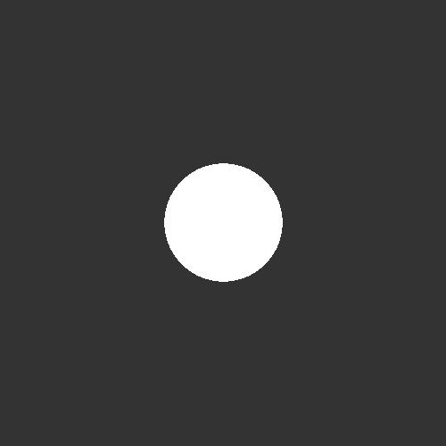
-
If you have written your RayTriangle::intersect properly, the generated image should look like:
-
If you have modified your GetColor so that it returns the emissive and ambient components of the lighting
equation, the generated image should look like:
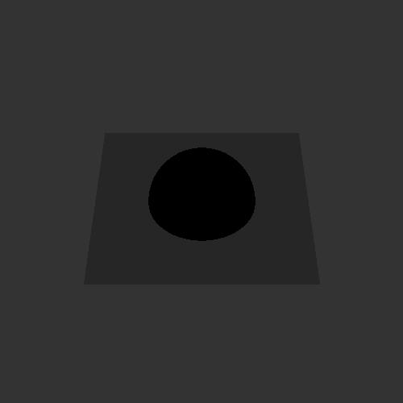
-
If you have written your RayLight::getDiffuse properly, the generated image should look like:
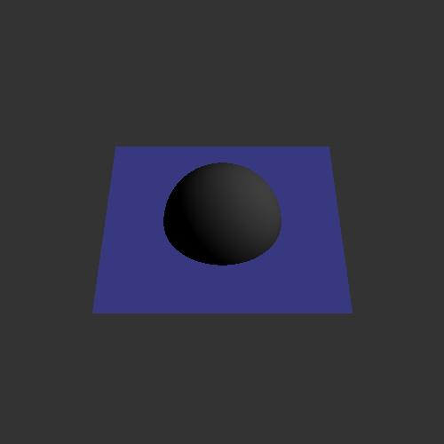
-
If you have written your RayLight::getSpecular properly, the generated image should look like:
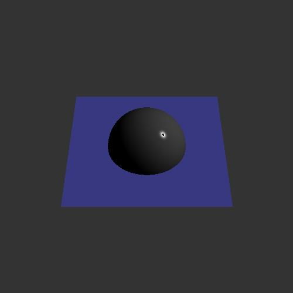
-
If you have written your RayLight::isInShadow properly, the generated image should look like:
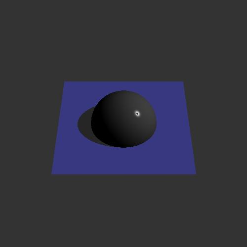
-
If you have modified your RayGroup::intersect so that it takes into account the associated transformation
of the scene-graph node, the generated image should look like:
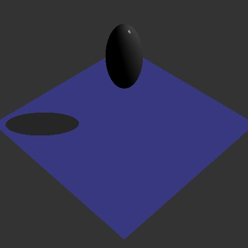
-
If you have modified your GetColor to recursively cast rays in the reflected direction, the
generated image should look like:
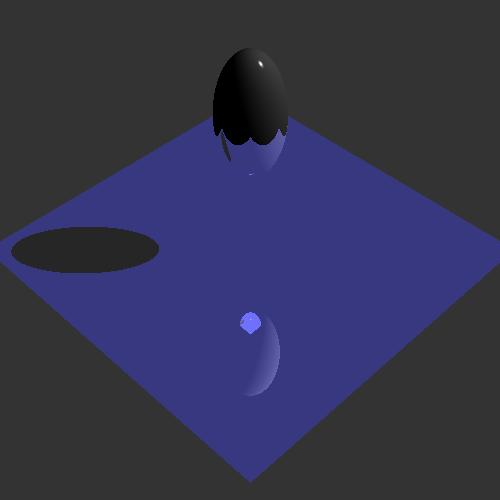
-
If you have modified your GetColor to recursively cast rays in the transparent direction, the
generated image should look like:
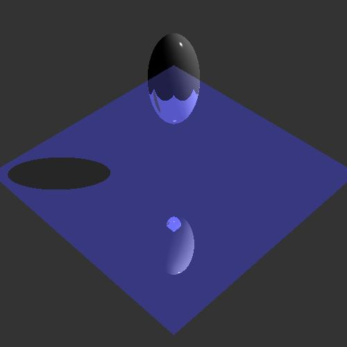
-
If you have implemented your RayLight::transparency to use partial shadows, the generated image should
look like:
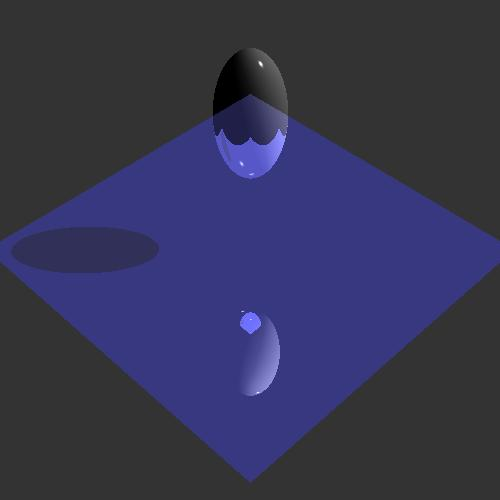
Once you have implemented your accerelated ray-tracer, you may want to try running it on some of the more complex
models. It is not recommended that you try running your ray-tracer on these models if you have not implemented
acceleration. The models consist of thousands of triangles and will take just shy of forever to ray-tracer without
acceleration.
-
The resulting image you would get from running your ray-tracer on the
dog.ray should look
like:
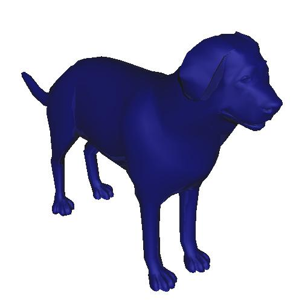
-
The resulting image you would get from running your ray-tracer on the
bunny.ray should look
like:
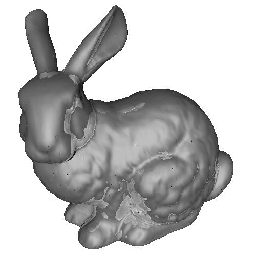
-
The resulting image you would get from running your ray-tracer on the
buddha.ray should look
like:
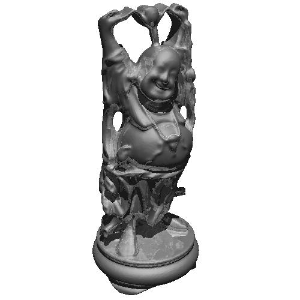